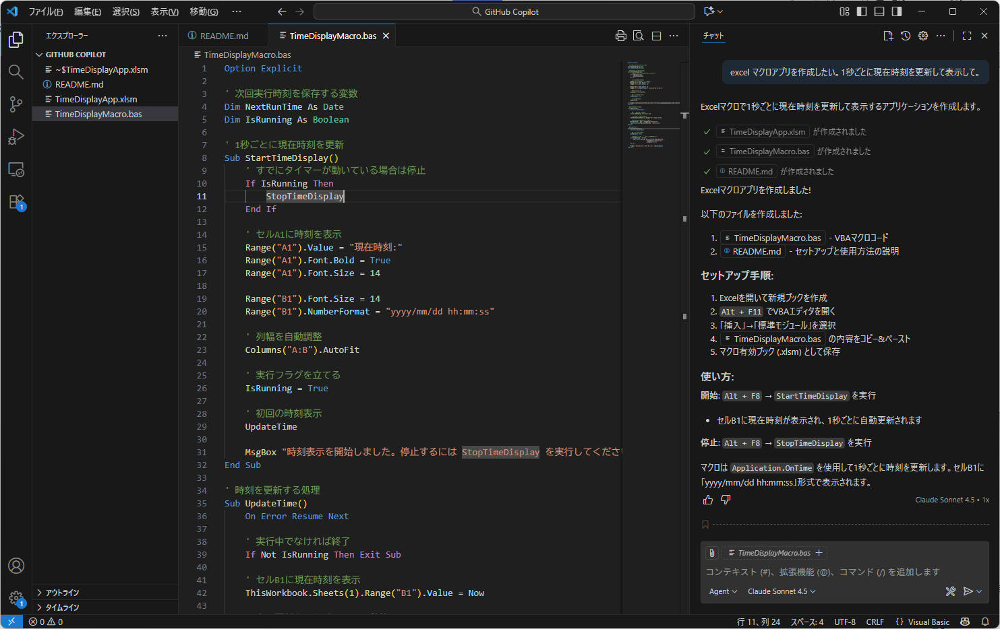

GitHub Copilot を使って、簡単な Excel マクロアプリを作成してみました。こちらで紹介します。
全作業を５分ぐらいで完了しました。
1秒周期で現在時刻を表示する、という簡単な内容です。
作成した Excel マクロアプリ： こちらに添付します
TimeDisplayApp.xlsm
こちら、実際に動作させてみた動画です。
[動画] "Excelマクロ_現在時刻を1秒更新.mp4"
下記のように依頼してみました。
excel マクロアプリを作成したい。1秒ごとに現在時刻を更新して表示して。

図： 実際の画面（vscode にて）
GitHub Copilot から実際に出力された例を以下に紹介します。
Option Explicit
' 次回実行時刻を保存する変数
Dim NextRunTime As Date
Dim IsRunning As Boolean
' 1秒ごとに現在時刻を更新
Sub StartTimeDisplay()
' すでにタイマーが動いている場合は停止
If IsRunning Then
StopTimeDisplay
End If
' セルA1に時刻を表示
Range("A1").Value = "現在時刻:"
Range("A1").Font.Bold = True
Range("A1").Font.Size = 14
Range("B1").Font.Size = 14
Range("B1").NumberFormat = "yyyy/mm/dd hh:mm:ss"
' 列幅を自動調整
Columns("A:B").AutoFit
' 実行フラグを立てる
IsRunning = True
' 初回の時刻表示
UpdateTime
MsgBox "時刻表示を開始しました。停止するには StopTimeDisplay を実行してください。", vbInformation
End Sub
' 時刻を更新する処理
Sub UpdateTime()
On Error Resume Next
' 実行中でなければ終了
If Not IsRunning Then Exit Sub
' セルB1に現在時刻を表示
ThisWorkbook.Sheets(1).Range("B1").Value = Now
' 次の更新をスケジュール(1秒後)
NextRunTime = Now + TimeValue("00:00:01")
Application.OnTime NextRunTime, "UpdateTime"
End Sub
' 時刻表示を停止
Sub StopTimeDisplay()
On Error Resume Next
' 実行フラグを下げる
IsRunning = False
' スケジュールされたタイマーをキャンセル
If NextRunTime > 0 Then
Application.OnTime EarliestTime:=NextRunTime, _
Procedure:="UpdateTime", _
Schedule:=False
End If
MsgBox "時刻表示を停止しました。", vbInformation
End Sub
# Excel 時刻表示マクロアプリ ## 概要 1秒ごとに現在時刻を更新して表示するExcelマクロアプリケーションです。 ## セットアップ手順 1. **新しいExcelブックを作成** - Excelを開いて新規ブックを作成します 2. **VBAエディタを開く** - `Alt + F11` を押してVBAエディタを開きます 3. **標準モジュールを追加** - メニューから「挿入」→「標準モジュール」を選択 4. **コードを貼り付け** - `TimeDisplayMacro.bas` の内容をモジュールにコピー&ペーストします 5. **マクロ有効ブックとして保存** - ファイル名: `TimeDisplayApp.xlsm` - ファイル形式: Excelマクロ有効ブック (*.xlsm) ## 使用方法 ### 時刻表示を開始 1. `Alt + F8` を押してマクロ一覧を表示 2. `StartTimeDisplay` を選択して「実行」をクリック 3. セルA1に「現在時刻:」、セルB1に現在時刻が表示され、1秒ごとに更新されます ### 時刻表示を停止 1. `Alt + F8` を押してマクロ一覧を表示 2. `StopTimeDisplay` を選択して「実行」をクリック ## 機能説明 - **StartTimeDisplay**: 時刻表示を開始します - セルA1にラベル「現在時刻:」を表示 - セルB1に現在時刻を「yyyy/mm/dd hh:mm:ss」形式で表示 - 1秒ごとに自動更新 - **UpdateTime**: 時刻を更新する内部処理 - 1秒ごとに自動的に呼び出されます - **StopTimeDisplay**: 時刻表示を停止します ## 注意事項 - マクロを実行するには、Excelのセキュリティ設定でマクロを有効にする必要があります - ファイルを閉じる前に `StopTimeDisplay` を実行することを推奨します - ブックを保存する際は、マクロ有効ブック (.xlsm) 形式で保存してください ## トラブルシューティング **マクロが実行できない場合:** - 「ファイル」→「オプション」→「セキュリティセンター」→「セキュリティセンターの設定」 - 「マクロの設定」で「すべてのマクロを有効にする」または「警告を表示してすべてのマクロを無効にする」を選択 **時刻が更新されない場合:** - 一度 `StopTimeDisplay` を実行してから、再度 `StartTimeDisplay` を実行してください
GitHub Copilot を使って Excel マクロアプリを作成する、ということを試してみました。
残念ながら GitHub Copilot は Excel ファイルおよびマクロを直接作成まで行ってはくれませんでしたが、若干の手操作だけで短時間でアプリケーション作成することができました。
ちょっとした Excel ツールを作成するという場面は、多くの方が時々？頻繁に行っているのではと考えます。GitHub Copilot を活用することでとても効率よく短時間で作成することができましたので、よかったら参考にしてみてください。
本ページの情報は、特記無い限り下記 MIT ライセンスで提供されます。
| 2025-11-13 | - | 新規作成 |